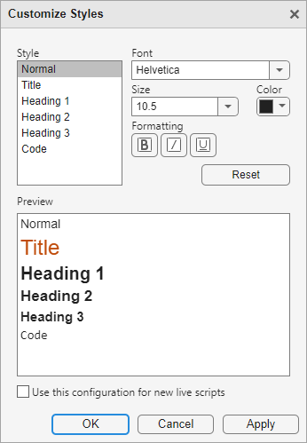

Format Text in the Live Editor
You can add formatted text, hyperlinks, tables, images, videos, and equations to your live scripts and functions to create a presentable document to share with others. You also can check your text for spelling issues and change the font of the text.
Insert Text Items
To insert a new item, go to the Insert tab and select from the available options.
| Option | Description | Additional Details |
|---|---|---|
Code | Insert a blank line of code. | You can insert a code line before, after, or between text lines. |
Section Break | Insert a section break. | You can insert a section break to divide your live script or function into manageable sections to evaluate individually. A section can consist of code, text, and output. For more information, see Create and Run Sections in Code. |
Text | Insert a blank line of text. | A text line can contain formatted text, hyperlinks, images, videos, hyperlinks, or equations. You can insert a text line before, after, or between code lines. |
Table of Contents | Insert a table of contents. | The table of contents contains a list of all the titles and headings in the document. If the document contains only one title, then it is not included in the table of contents. Only the title of the table of contents is editable. You can insert a table of contents only in text lines. If you insert a table of contents into a code line, MATLAB® places it directly above the current code section. When exporting a live script containing a table of contents to Microsoft® Word, by default, the table of contents in the resulting document does not include page numbers. To add page numbers, click the table of contents and select Update Table. |
Code Example | Insert a formatted code example. | A code example is sample code that appears as indented and monospaced text.
|
Table | Insert a table. | You can insert tables only in text lines. If you insert a table into a code line, MATLAB places the table in a new text line directly under the selected code line. To specify the table size,
select Table
After inserting the table, you can modify its rows and columns:
|
Image | Insert an image. | You can insert images only in text lines. If you insert an image into a code line, MATLAB places the image in a new text line directly under the selected code line. To change the alternate text, alignment, and size of an image after inserting it, right-click the image and select Edit Image... from the context menu.
|
Video | Insert a YouTube® video or video file. | You can insert videos only in text lines. If you insert a video into a code line, MATLAB places the video in a new text line directly under the selected code line.
|
Hyperlink | Insert a hyperlink. | You can insert hyperlinks only in text lines. If you insert a hyperlink into a code line, MATLAB places the hyperlink in a new text line directly under the selected code line.
|
Equation | Insert an equation. | You insert add equations only in text lines. If you insert an equation into a code line, MATLAB places the equation in a new text line directly under the selected code line. For more information, see Insert Equations into the Live Editor. |
Format Text
To format existing text, use any of the options included in the Live Editor tab Text section:
| Format Type | Options |
|---|---|
| Text Style | Normal Heading 1 Heading 2 Heading 3 Title |
| Text Alignment | Align left Align center Align right |
| Lists | Numbered list Bulleted list |
| Standard Formatting | Bold Italic Underline Monospaced |
To change the case of selected text or code from all uppercase to lowercase, or vice versa, select the text, right-click, and select Change Case. You also can press Ctrl+Shift+A. If the text contains both uppercase and lowercase text, MATLAB changes the case to all uppercase.
Checking Spelling
You can check for spelling issues in text lines and comments in your live scripts and functions. To enable spell checking, go to the View tab and click the Spelling button on. Words with a potential spelling issue are underlined in blue. To resolve the issue, click the word and select one of the suggested corrections. You also can choose to ignore the issue or add the flagged word to your local dictionary. To navigate between issues using the keyboard, use Alt+F7 and Alt+Shift+F7.
Spell checking is supported in US English for MATLAB code files (.m) and MATLAB Live Code files (.mlx and .m)
and. To remove words from your local dictionary, go to your MATLAB settings folder (the folder returned when you run prefdir) and edit the file
dict/en_US_userDictionary.tdi.
Change Fonts and Colors
You can change the font, size, color, and formatting of text and code styles in the Live Editor.
To customize a text or code style for the current document, go to the Live Editor tab, and in the Text section, click the text style drop-down menu and select Customize styles. Then, select the style that you want to customize and change the font, size, color, and formatting for the selected style. The Customize Styles dialog box shows a preview of each style.
The customized style applies only to the current document. To apply the customized style to all new live scripts as well, select the Use this configuration for new live scripts option.

To customize a text or code style for all open documents and all new documents, use the matlab.fonts Settings. The Live Editor updates all open live scripts and live functions to show the selected fonts. When you create new live scripts or functions, the selected fonts are applied as well.
For example, this code changes the color and style of titles in the Live Editor:
s = settings;
s.matlab.fonts.editor.title.Style.PersonalValue = {'bold'};
s.matlab.fonts.editor.title.Color.PersonalValue = [0 0 255 1]; Zoom
To increase or decrease the displayed font size in the Live Editor, zoom in or out using the Ctrl + Plus (+) and Ctrl + Minus (-) keyboard shortcuts or by holding Ctrl and scrolling with the mouse. On macOS systems, use the Command key instead of the Ctrl key. The change in the displayed font size is not honored when exporting the live script to PDF, Microsoft Word, HTML, LaTeX, Markdown, or Jupyter® notebooks.
Autoformatting
For quick formatting in live scripts and functions, you can use a combination of keyboard shortcuts and character sequences. Formatting appears after you enter the final character in a sequence.
This table shows a list of formatting styles and their available keyboard shortcuts and autoformatting sequences.
| Formatting Style | Autoformatting Sequence | Keyboard Shortcut |
|---|---|---|
| Title |
| Ctrl + Alt + L |
| Heading 1 |
| Ctrl + Shift + 1 |
| Heading 2 |
| Ctrl + Shift + 2 |
| Heading 3 |
| Ctrl + Shift + 3 |
| Section break with heading 1 |
| With cursor at beginning of line with
Ctrl + Shift + 1, then Ctrl + Alt + Enter |
| Section break |
| Ctrl + Alt + Enter |
| Bulleted list |
| Ctrl + Alt + U |
| Numbered list |
| Ctrl + Alt + O |
| Italic |
| Ctrl + I |
| Bold |
| Ctrl + B |
| Bold and italic |
| Ctrl + B, then Ctrl + I |
| Monospace |
| Ctrl + M |
| Underline | None | Ctrl + U |
| LaTeX equation |
| Ctrl + Shift + L |
| Hyperlink |
| Ctrl + K |
Trademark, service mark, and copyright symbols (™, ℠, ®, and ©) |
| None |
Note
Title, heading, section break, and list sequences must be entered at the beginning of a line.
Sometimes you want an autoformatting sequence such as *** to
appear literally. To display the characters in the sequence, escape out of the
autoformatting by pressing the Backspace key or by clicking
Undo
. For example, if you type ##
Enter, a heading in the Heading 1 style with the word
text +text appears. To undo the formatting style and simply display
## text, press the Backspace key. You only
can escape out of a sequence directly after completing it. After you enter another
character or move the cursor, escaping is no longer possible.
To revert the autoformatting for LaTeX equations and hyperlinks, use the Backspace key at any point.
To force formatting to reappear after escaping out of a sequence, click the Redo button. You only can redo an action directly after escaping it. After you enter another character or move the cursor, the redo action is no longer possible. In this case, to force the formatting to reappear, delete the last character in the sequence and type it again.
To disable all or certain autoformatting sequences, you can adjust the Editor/Debugger Autoformatting Settings.